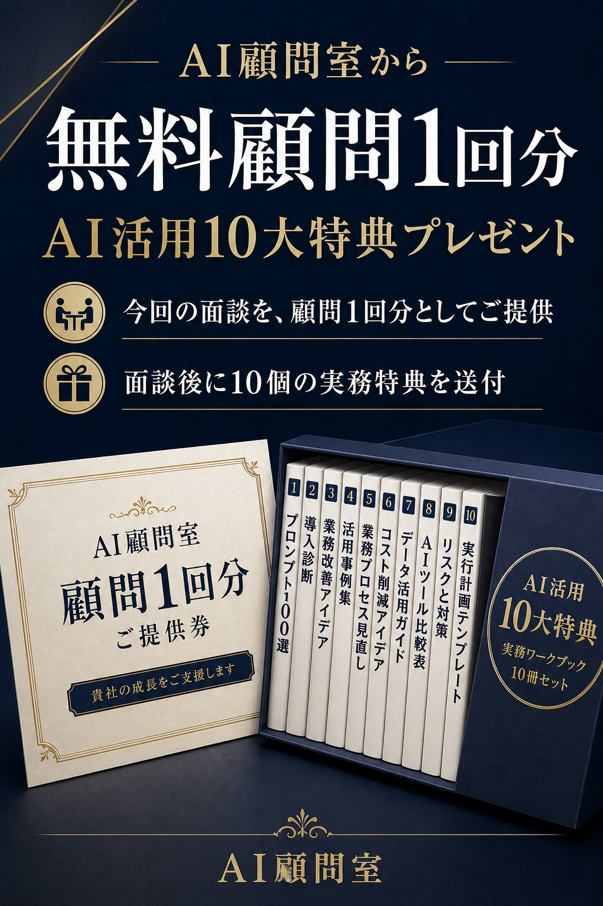

経営の焦点
AIで変えたい業務と、経営上の成果がつながっているか。
STATE OF AI FOR SMB
中小企業のAI活用を、ツールの多さではなく、業務・データ・統制・人材・成果のつながりで読み解く実務レポートです。

同じツールを導入しても、業務の選び方、入力データの整え方、確認者の置き方で成果は変わります。
このレポートは、経営者と現場が同じ地図を見ながら、次の90日を決めるための会話材料です。
6つの確認軸
点数を競うためではなく、次に整えるものを決めるためのチェックです。
AIで変えたい業務と、経営上の成果がつながっているか。
入力、判断、出力、確認を一つの流れとして説明できるか。
参照する情報の場所、更新頻度、扱える権限が整理されているか。
入力してはいけない情報、承認、ログ、例外対応が決まっているか。
使う人が試し、直し、共有する時間と役割があるか。
時間、品質、漏れ、売上など、変化を追う指標があるか。
レポート本編では、現在地に応じた問いと最初のアクションを整理します。
読み方: この表の段階は一般的な実務整理であり、特定企業の調査結果や市場統計を示すものではありません。